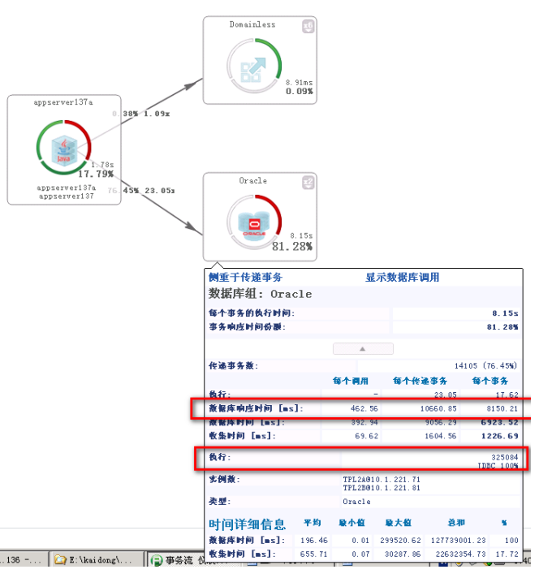

Dynatrace AppMon 实战手册 - 29.某保险公司核心系统变慢问题分析
在 2019-06-19 Wednesday 发布于 Observability 分类 • 1 min read
dynaTrace最新案例分享-20151106应用性能下降问题¶
这是一个展现dynaTrace强大功能的典型案例！具体的故障及相关的分析如下。
具体故障分析流程¶
1. 先用事务流拓扑图查看具体慢的点在哪，如下图：
可以大体看出有2段为红色告警，一个是weblogic层面，一个是数据库层面。
另外也观察到数据库响应时间过长，达到了8s之久。
2. 分析第一个红色告警，主要是事务失败率过高。
3. 查看相关的报错，可以看到主要是数据库相关异常报错。
可以从日志中初步判断：
连接池满
DBA已经在杀SQL了

4. 再查看第二个红色告警，可以看到：
数据库响应时间过长，为8s左右
连接池满

5. 查看数据库的相关情况，具体如下：
池大小160，使用量100%。
tpl2a平均获取时间12s。
6. 找出相关的执行次数多、平均执行时间长的sql语句。如下图：
7. 从对应sql直接转到相关请求，从下图可以看出事务来自客户端：10.94.21.23。（这个是微信平台系统的一个server地址）。联系微信后，知道对方在搞活动。
8. 最后也可以看一下这条web请求的相关信息：（吞吐量中绿色面积是根据历史数据计算出来的正常吞吐量区间范围，可以看到因为做活动，吞吐量飙涨，远远大于历史基线。而且可以看出活动高峰期是在8:00-9:00）
9. 再看一下最慢响应时间的基线，如下图：基线时间准确到2669ms，但是活动高峰期响应时间高出了近50s！
总结¶
这是一个典型的由于其他系统调用而导致核心系统出问题的案例，在这个案例中dynaTrace的强大功能展现的淋漓尽致。
从dynaTrace给出的信息我们可以看出以下几个问题：
- 很明显微信项目组对活动的准备不足；
- 各个系统之间的相互调用拓扑关系是非常重要的。（这次dynaTrace的agent只安装在核心的一台机器上，但是仍然可以发现微信的调用；如果微信系统有安装，那么我猜测直接从拓扑图就能一眼看出问题根源）